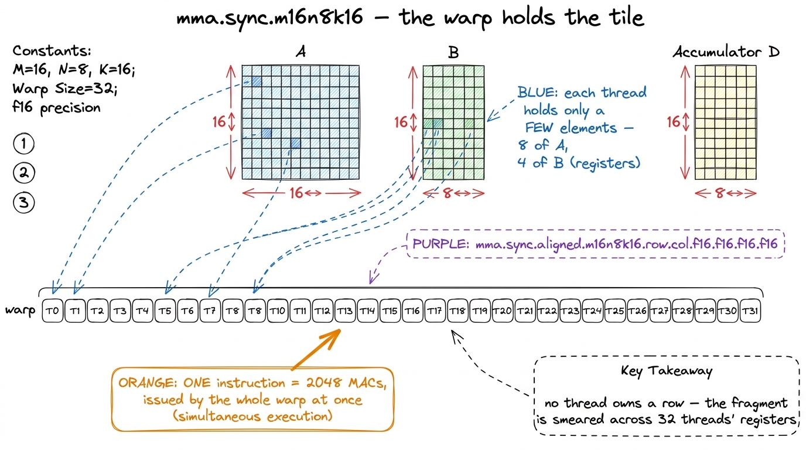
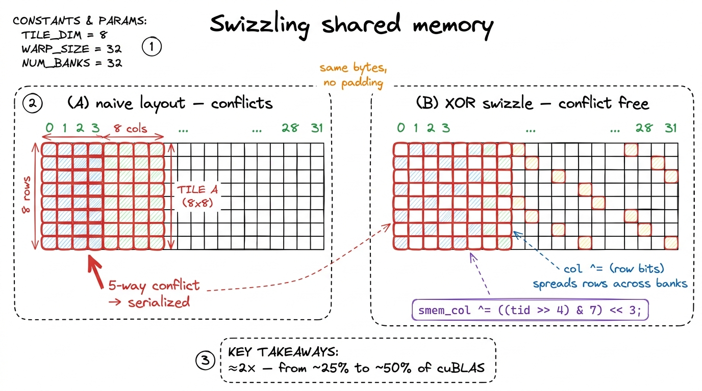
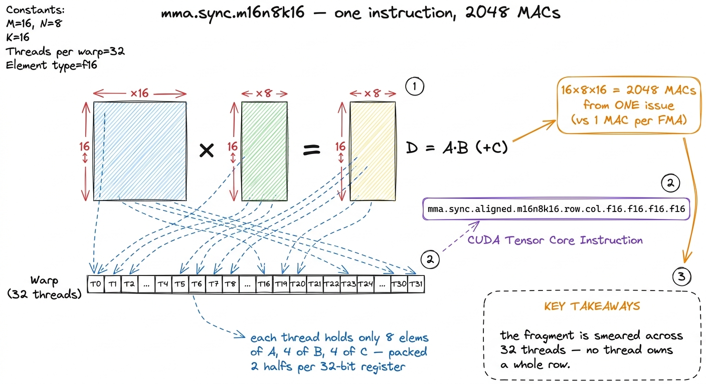
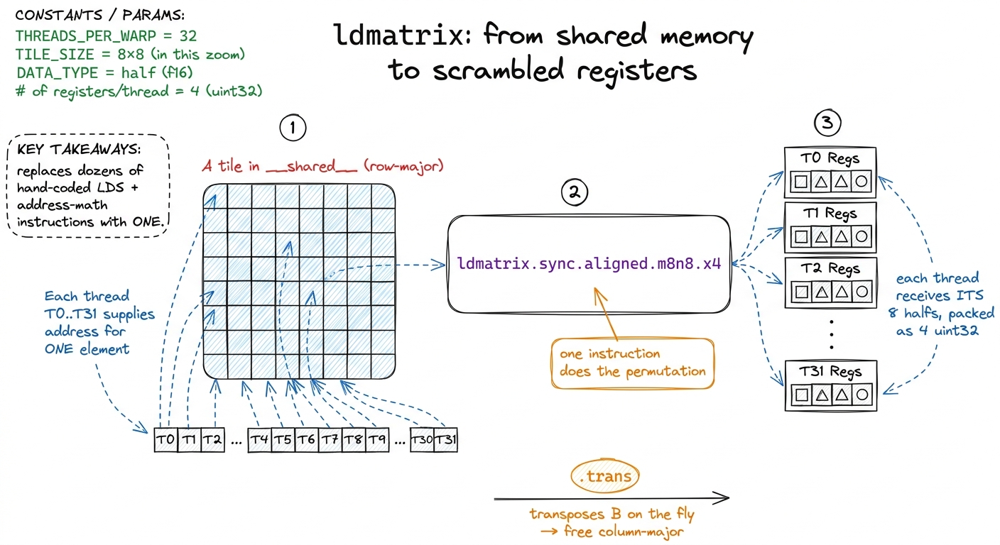
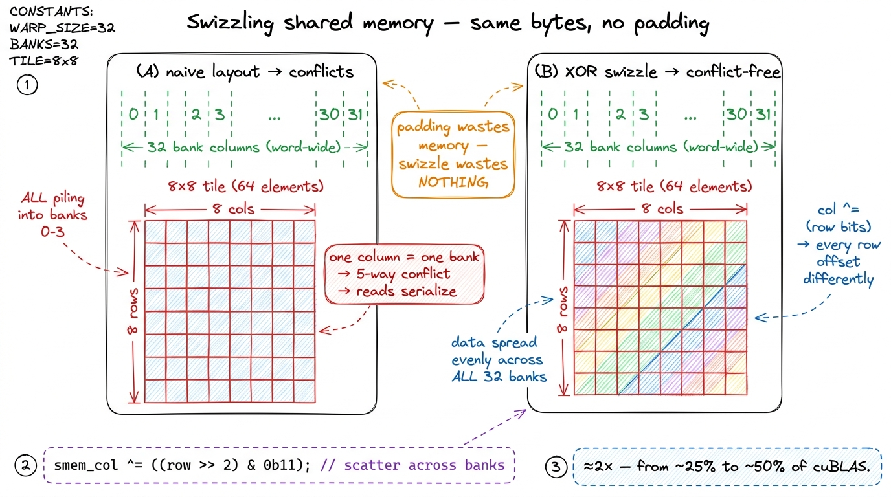
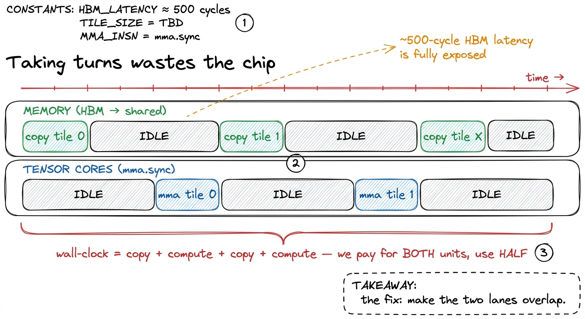
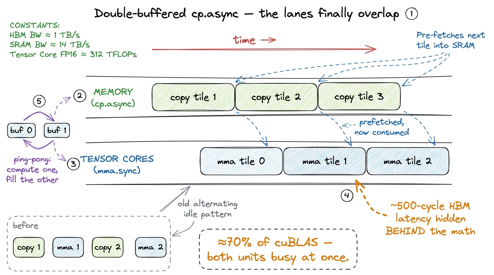
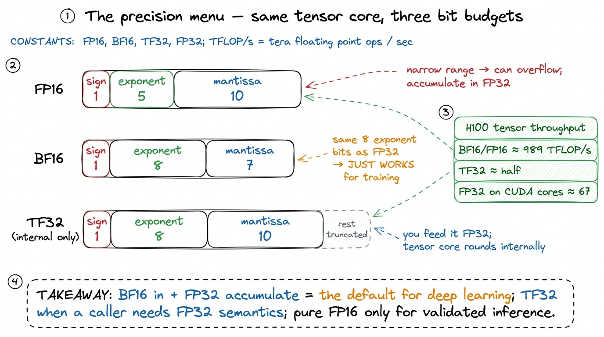

Tensor cores III: to cuBLAS speed TC
In the previous kernel we lit the tensor cores up with the wmma API and jumped past our best CUDA-core GEMM. But we ended on a confession: wmma was leaving a lot of performance on the table, and the profiler could point at exactly where. This is the article where we take the training wheels off.
Before we start, let me say plainly what question we are answering, because it is a specific one. We already have a working tensor-core matmul. It runs. It is correct. It is faster than anything we wrote on the CUDA cores. So the question is not "how do I use a tensor core." It is this: when a working tensor-core kernel is stuck at a quarter of cuBLAS, where is the other three-quarters hiding, and why is it hiding in the gap between what I said and what the hardware actually did?
To answer that we have to drop one level. We are going to leave the friendly wmma API behind and write the raw PTX instruction it compiles to, mma.sync. That sounds scary. It is not. By the end of this page you will understand, from the ground up, three things: how a tensor-core tile is physically smeared across the registers of 32 threads, how a special load instruction called ldmatrix puts it there for us, and how a two-buffer software pipeline lets the memory system and the tensor cores stop taking turns and finally run at the same time. Each one buys a named, measured jump toward cuBLAS. Stack them, and we land within a few percent of NVIDIA's flagship library — standing at the doorway of Hopper's wgmma.
The one mental model: a tile smeared across the warp
Everything in this article hangs on a single picture, so let me draw it before we write a line of code.
On the CUDA cores, life was simple. One thread owned one output element. If thread 5 was computing C[5][3], then thread 5 held that number in its own register, and no other thread cared. Memory was private; the mental model was "one thread, one number."
Tensor cores throw that model out. A tensor-core matrix-multiply is not a per-thread instruction. It is not even a per-block instruction. It is a warp-level instruction: all 32 threads in the warp execute one mma.sync together, cooperatively, as a single unit — and the input matrices A and B, and the output matrix C, are distributed across the registers of all 32 threads at once. No single thread holds a whole row. No single thread holds a whole column. Each thread holds a small, scattered handful of elements — a few of A, a couple of B, a few of C — and the tensor core reaches into all 32 threads' registers, does the math, and writes the answer back, also scattered.
That is the whole shift, and it is worth sitting with because it is genuinely strange. Let me give you the analogy I use.

figure rendering · The central picture. On CUDA cores a thread owns its number alone; onKeep the orchestra in your head. We will come back to it at every step. When something surprises you later — "wait, why does thread 0 hold those elements and not the ones next to them?" — the answer is always: because the tensor core's wiring expects the score torn up a very particular way, and our whole job is to tear it up correctly.
Why wmma was the ceiling
So why couldn't wmma just do all this for us? It did, in a sense — that is exactly its problem.
The wmma API is a beautiful abstraction, and abstractions hide things on purpose. You call load_matrix_sync, you get back an opaque object called a fragment, you call mma_sync, and you never once see where the 256 elements of a 16×16 tile physically live. Which thread holds which element? You are not told. The compiler decides. And here is the catch that makes it slow: the compiler has to be conservative. The same wmma source has to compile and run correctly on Volta, Turing, Ampere, and Hopper — four generations of tensor core with different internal layouts.1 This is real portability, not a hypothetical: a single wmma kernel compiled in 2020 will still run on an H100 today. The price of that guarantee is that the compiler cannot assume any one architecture's fast path, so it emits a fragment layout and a load sequence that is legal everywhere rather than optimal anywhere. To be correct everywhere, it picks fixed fragment layouts and inserts extra shared-memory round-trips that a hand-written kernel could skip.
When I inspected the SASS — the actual machine code — from the wmma kernel, the tensor-core HMMA instructions were there, but they were tiny islands in a sea of LDS (load-from-shared) instructions and integer address arithmetic. The tensor cores were being fed badly. They spent most of their time waiting while the surrounding scalar code shuffled operands into place.

figure rendering · Reading the machine code. The `wmma` path drowns each tensor-core op iwmma path drowns each tensor-core op in address arithmetic; writing mma.sync by hand strips the chores away.The fix is to stop describing what we want and start saying it. mma.sync is the PTX instruction that wmma compiles down to anyway. We are just going to write it directly. That means we own the fragment layout, we own the loads, and — crucially, later — we can pipeline them.
Reading the mma.sync instruction
Here is the instruction we start with. Do not be intimidated by the length; it is just a lot of small, readable pieces jammed together.
mma.sync.aligned.m16n8k16.row.col.f16.f16.f16.f16Read it left to right like a sentence:
mma.sync— a matrix-multiply-accumulate, executed synchronously by the whole warp.aligned— every thread in the warp participates; none is masked off.m16n8k16— the tile shape. This computesD = A·B + Cwhere A is16×16, B is16×8, and the accumulator C/D is16×8. Read it asM×N×K: M=16 rows of output, N=8 columns of output, K=16 is the shared inner dimension we sum over.row.col— A is stored row-major in the registers, B is stored column-major. (This matters, andldmatrixwill handle it for us in a moment.).f16.f16.f16.f16— the element types of D, A, B, C respectively.2 The shapes are not free-form — you cannot ask for any M, N, K you like. Volta's original tensor core only offeredm8n8k4. Ampere added them16n8k8andm16n8k16family. Each precision has its own table of legal shapes in the PTX ISA, and asking for an illegal one is a compile error, not a slow path. Alex Armbruster's original walkthrough uses the slightly smallerm16n8k8; thek16variant here just folds twok-steps into one instruction.
Now let's do the napkin math that tells you why this instruction is a big deal. One m16n8k16 does a 16×8 block of output, summed over a k-slice of 16. That is 16 × 8 × 16 = 2,048 multiply-accumulate operations. Two thousand and forty-eight MACs, issued by a single instruction. On the CUDA cores, one FMA instruction does exactly one MAC. So this one instruction is worth roughly two thousand of the scalar ones. That is where the order-of-magnitude throughput of tensor cores comes from — not from running faster, but from doing enormously more per instruction.

figure rendering · Anatomy of the instruction. A `16×8` output block summed over `k=16` i16×8 output block summed over k=16 is 2,048 MACs from a single warp-level issue, with operands scattered across all 32 threads.There is one hard part left, and it is the only hard part: the operands have to already be sitting in the right registers, in the right threads, in the exact scrambled order the tensor core's wiring expects — before the instruction runs. Get one element in the wrong thread and you get silent garbage. Getting the tile into that scrambled order is the entire game. So let's look at how a thread would have to do it by hand, feel the pain, and then meet the instruction that removes the pain.
ldmatrix: the loader that scrambles for you
Picture doing it manually. A 16×16 tile of A is 256 half-precision numbers. To feed mma.sync, thread 0 needs these 8 specific elements, thread 1 needs those 8, thread 17 needs a completely different scattered 8, and so on — following the tensor core's fixed permutation. Each thread would have to compute, from its own threadIdx, the shared-memory addresses of the exact elements it personally owns, issue eight separate small loads, and pack them two-at-a-time into 32-bit registers. Multiply that by A and B, every k-step, every iteration. That is precisely the sludge of LDS and address arithmetic I saw drowning the wmma SASS.
Ampere added one instruction built for exactly this job: ldmatrix. A single ldmatrix.sync.aligned.m8n8.x4 reads four 8×8 tiles out of shared memory and deposits them into registers already permuted into MMA fragment order. Each of the 32 threads hands ldmatrix one shared-memory address, and the instruction figures out the scramble and hands each thread back its correct handful of elements. One instruction replaces the whole rat's-nest of per-thread address math.
It has one more gift. Remember row.col — A row-major, B column-major? ldmatrix has a .trans variant that transposes on the fly, so we can pull a column-major B fragment straight out of a row-major shared-memory tile with no separate transpose pass. The hardware does the flip for free during the load.

figure rendering · `ldmatrix` in one picture. Every thread supplies one address; the instldmatrix in one picture. Every thread supplies one address; the instruction returns each thread's correctly-scrambled slice of the fragment — optionally transposed.With ldmatrix, the load path per k-step becomes clean and three-staged: global memory → shared memory (done once, shared by the whole block), then ldmatrix from shared into registers (per warp), then mma.sync on those registers. In code:
// A_smem, B_smem are __shared__ half tiles for this k-slice.
// inputs are FP16; the accumulator is FP32 — the real-world default.
uint32_t a_frag[4], b_frag[2];
float c_frag[4] = {0};
// each thread hands ldmatrix its own shared-memory address;
// the instruction returns that thread's slice of the fragment.
ldmatrix_x4(a_frag, A_smem_addr_for(threadIdx.x)); // 16x16 of A
ldmatrix_x2(b_frag, B_smem_addr_for(threadIdx.x)); // 16x8 of B, transposed
asm volatile(
"mma.sync.aligned.m16n8k16.row.col.f32.f16.f16.f32 "
"{%0,%1,%2,%3}, {%4,%5,%6,%7}, {%8,%9}, {%10,%11,%12,%13};"
: "=f"(c_frag[0]), "=f"(c_frag[1]), "=f"(c_frag[2]), "=f"(c_frag[3])
: "r"(a_frag[0]), "r"(a_frag[1]), "r"(a_frag[2]), "r"(a_frag[3]),
"r"(b_frag[0]), "r"(b_frag[1]),
"f"(c_frag[0]), "f"(c_frag[1]), "f"(c_frag[2]), "f"(c_frag[3]));Why four uint32_ts for A but only two for B? Count the elements. A is 16×16 split across 32 threads = 8 halfs per thread; two halfs pack into one 32-bit register, so 4 registers per thread. B is 16×8 = 4 halfs per thread = 2 registers. The accumulator C/D is 16×8 = 4 values per thread. If we accumulated in FP16 those four values would pack two-to-a-register into just 2 registers; but here — as in real training — we accumulate in FP32, and a 32-bit float fills a whole register on its own, so the accumulator needs 4 registers (that is why the suffix is .f32.f16.f16.f32: FP32 out, FP16 in, FP32 in). Every number in that code snippet falls out of the tile shapes and the 32-thread orchestra — nothing is arbitrary. This is the level of control wmma never gave us.
Swapping this hand-managed ldmatrix + mma.sync inner loop in for the wmma calls, and unrolling the k-loop so the compiler can pack instructions tightly, the kernel moves from roughly 8% of cuBLAS at the naive tiled baseline to around 24% once loads are vectorized and the loop is unrolled. Real progress — but now the next bottleneck steps into the light, and it is one we have met before on the CUDA-core ladder: shared-memory bank conflicts.
Killing bank conflicts with a swizzle
With the loads explicit, Nsight Compute stops complaining about instruction overhead and starts pointing its finger at shared memory. To see why, we need one fact about how shared memory is physically built.
Shared memory on the H100 is not one big slab. It is 32 independent banks, side by side, and each bank can hand out exactly one 4-byte word per cycle. Which bank a given word lives in is simple: bank = word_index % 32. When a warp's 32 threads read 32 words that happen to land in 32 distinct banks, all 32 reads happen in one cycle — full bandwidth. But when several threads want words that live in the same bank, the hardware cannot serve them at once; it serializes them, one per cycle. That is a bank conflict, and an N-way conflict makes that access N times slower.
Now here is the trap our 8×8 MMA tiles fell into. Laid out naively, every element in a given column of the tile has an index that differs by exactly the row width — and if that width is a multiple of 32, then every element in a column lands in the same bank. When a warp reads a column to feed ldmatrix, all eight of those reads pile into four banks. The profiler measured it: roughly a 5-way conflict on the loads and a 2.6-way conflict on the stores. Every conflicted access serializes, and the tensor cores stall — starving for operands that shared memory is dribbling out four banks at a time.
There are two ways out.
The blunt fix is padding: add a few dead columns so that consecutive rows are offset and no longer collide in the same bank. It works. But it wastes shared memory, and shared memory is scarce — we get at most 228 KiB usable per SM,3 Those 228 KiB are not a round hardware constant; the H100's combined L1/shared block is 256 KB, and 228 KiB is the maximum you can opt into for shared memory via cudaFuncAttributeMaxDynamicSharedMemorySize, leaving the rest as L1. Every byte you burn on padding is a byte of tile you cannot stage, which directly costs you double-buffering room later. and every wasted byte is a tile we cannot keep in flight. Worse, padding has a nasty limitation: it fixes store conflicts but often leaves load conflicts alone, because padding only helps when the varying part of the address is multiplied by the padded stride — and for the load pattern, it frequently isn't.
The elegant fix is a swizzle. Instead of adding dead space, we permute the shared-memory indices with a couple of XOR operations, so that each 8×8 tile gets scattered across all 32 banks — with zero wasted bytes. The idea is to XOR a few bits of the row index into the column index: col ^= (row & mask) >> shift. This shuffles each row by a different amount, so a column that used to pile into one bank now fans out across all of them.4 The exact mask and shift depend on element size and tile width — for a 64-wide FP16 tile the canonical function is f(i) = i ^ ((i & 0b1100) >> 2), generalized across the tile. Get it wrong and you either reintroduce conflicts or, worse, corrupt the tile silently by reading the wrong elements. This is one of the genuinely fiddly parts of hand-written tensor-core GEMM, and it is exactly the bookkeeping Hopper's TMA later does in hardware.

figure rendering · The swizzle. XORing row bits into the column index scatters each MMA tThe swizzle is the largest single jump on the tensor-core half of the ladder. Removing the conflicts roughly doubles throughput, taking us from ~25% to ~50% of cuBLAS. Stop and appreciate why that is possible: we did not change a single arithmetic operation. The tensor cores were always capable of this speed. They were simply being starved, and un-starving them — feeding the same operands through 32 banks instead of 4 — doubled the work they could do. That is the recurring lesson of kernel engineering in one number: the compute unit is rarely the problem; the feeding is.
The tensor cores are now being fed cleanly. So what is stopping them? Not bandwidth anymore. Now it is latency — and fixing latency needs a completely different idea.
Double buffering: stop taking turns
Here is the shape of the remaining problem, drawn as a story. Our inner loop, once per k-slice, does two things in sequence:
- Copy the next tile of A and B from global memory (HBM) into shared memory.
- Run the
ldmatrix+mma.syncchain on the current tile.
Copy, compute, copy, compute. Now think about the timescales. The global-memory copy is slow — HBM latency is hundreds of cycles, call it ~500. The mma.sync chain is fast. So while the slow copy runs, the tensor cores sit idle, twiddling their thumbs. Then while the fast compute runs, the memory system sits idle. Two of the most expensive resources on the chip, each one waiting on the other, and neither is ever busy at the same time. We are paying for both and using half.

figure rendering · The problem, drawn on a timeline. Serial copy-then-compute leaves eachThe classical fix is a software pipeline built on double buffering, and it is one of the most satisfying ideas in all of GPU programming. Keep two shared-memory buffers instead of one — call them buf 0 and buf 1. Now, while the tensor cores chew on the tile in buf 0, kick off the copy of the next tile into buf 1 at the same time. Next iteration, flip: compute on buf 1 while copying into buf 0. The two operations overlap. The ~500-cycle memory latency of tile k+1 is hidden behind the compute of tile k. If the compute takes at least as long as the copy, the memory latency effectively disappears — it happens in the shadows.
But there is a subtlety. A normal load blocks the thread: the warp issues it and stalls until the data arrives. If our copy blocked, we could never overlap it with compute — the warp would be frozen. We need a copy that fires and keeps going.
That instruction is cp.async — Ampere's asynchronous copy. Unlike a normal load, cp.async copies global → shared without staging through registers and without blocking the thread. You fire it, and it runs in the background on the load/store pipeline while your warp marches on to do math. You only stop and wait — via cp.async.commit_group and cp.async.wait_group — at the exact moment you actually need the data to be there.5 "Async" here means non-blocking to the warp, not free. cp.async still executes on the SM's load/store units and still consumes memory bandwidth — it just doesn't freeze the warp while it runs. Hopper goes further with the TMA, a dedicated DMA engine that does the entire 2D tile transfer, swizzle and all, off the warp entirely — a single thread kicks it off and no lane babysits the copy. That is the hopper-tma story.
Here is the pipelined loop:
// prologue: kick off the first tile before the loop starts
cp_async_cg(&A_smem[0], &A_gmem[0], 16); // 16 bytes = float4 = 8 halfs
cp_async_cg(&B_smem[0], &B_gmem[0], 16);
cp_async_commit();
for (int k = 0; k < K; k += K_TILE) {
int cur = (k / K_TILE) & 1, nxt = cur ^ 1;
// prefetch the NEXT tile into the OTHER buffer — non-blocking
if (k + K_TILE < K) {
cp_async_cg(&A_smem[nxt * TILE], &A_gmem[k + K_TILE], 16);
cp_async_cg(&B_smem[nxt * TILE], &B_gmem[k + K_TILE], 16);
cp_async_commit();
}
cp_async_wait_group<1>(); // wait until only the newest group is in flight
__syncthreads();
// ... ldmatrix + mma.sync on A_smem[cur], B_smem[cur] ...
}Two details are worth slowing down for. First, notice the copies move float4-sized chunks — 16 bytes, eight halfs at a time — so each cp.async is one fat, coalesced transaction instead of eight skinny ones. Fewer, wider transactions is almost always faster; the memory system loves it. Second, look at wait_group<1>. It does not wait for everything. It blocks only until everything except the single most-recently-committed group has landed. That is exactly the double-buffer invariant: the tile we are about to compute on is guaranteed ready, while the tile we just prefetched is allowed to still be in flight. That one template argument is what lets the overlap actually happen — set it to <0> and you accidentally wait for the prefetch too, and the whole pipeline collapses back into taking turns.

figure rendering · Double buffering, drawn. While the tensor cores compute tile `k`, `cp.k, cp.async prefetches tile k+1 into the other buffer, so HBM latency vanishes into the shadow of the math.With the pipeline in place, the profiler's memory-stall time collapses — the "waiting on global memory" bars that dominated the timeline shrink to almost nothing. This is the jump from ~50% to roughly 70% of cuBLAS. The tensor cores are now busy most of the time. The remaining gap from here is no longer architectural; it is tuning — choosing tile shapes, precomputing loop indices at compile time so the innermost loop isn't clogged with integer arithmetic, and squeezing the last few conflicts out.6 One easy-to-miss tuning trap: in an early version of this kernel the innermost loop spent 92% of all executed instructions on swizzled index arithmetic, not on math. Hoisting those index computations to compile-time constants (constexpr) and unrolling cut the instruction count enormously and closed much of the gap between 70% and the 90s. The tensor cores were fine; the scalar bookkeeping around them was the tax.
The precision menu — free speed, or free accuracy
Everything above was written in FP16 for concreteness. But the same mma.sync machinery gives you a menu of numeric formats, and choosing the right one is one of the rare places in engineering where you get something for nothing — either free speed or free accuracy, depending on which you needed.
Let me lay out the three that matter, and why each exists.
- FP16 (
f16) — 16 bits: 1 sign, 5 exponent, 10 mantissa. Fastest and smallest. But those 5 exponent bits give it a narrow dynamic range — the largest representable value is only about 65,504, and small gradients underflow to zero. On real training data it can overflow or silently lose precision. The near-universal fix is to accumulate in FP32: the multiply happens in FP16 (fast, on the tensor core), but the running sum is kept in a 32-bit accumulator so thousands of additions don't drift. Inmma.syncterms that is the.f16.f16.f32variant — FP16 inputs, FP32 accumulate.
- BF16 (
bf16) — also 16 bits, but spent differently: 1 sign, 8 exponent, 7 mantissa. It trades mantissa precision for FP16's missing dynamic range, giving it the same exponent range as full FP32. Same tensor-core throughput as FP16, same halved memory traffic — but because the exponent is wide, it just works on deep-learning tensors without the fiddly loss-scaling that FP16 training needs. This is why BF16 is what modern training actually uses. DeepSeek, Llama, essentially every large model you have heard of trains in BF16 with FP32 accumulation.
- TF32 (
tf32) — a 19-bit internal format, best understood as a drop-in accelerator for FP32 math. It keeps FP32's 8 exponent bits but truncates the mantissa to 10 bits. You feed it FP32 arrays; the tensor core internally rounds each operand to TF32, multiplies on the tensor hardware at many times CUDA-core FP32 speed, and gives you a result that is "close enough" to true FP32 for most workloads.7 TF32 is not a storage format — you never allocate a TF32 array or write one to HBM. It exists only inside the tensor core, as the reduced-precision mode it uses when multiplying two FP32 operands. On the numbers: the H100 does about 989 TFLOP/s of BF16/FP16 tensor throughput; TF32 runs at roughly half that — still vastly faster than the ~67 TFLOP/s of FP32 you would get from the CUDA cores.

figure rendering · The precision menu. Same tensor core, three ways to spend 16-ish bitsThe rule of thumb is short: BF16 inputs, FP32 accumulate is the default for deep learning. Reach for TF32 when a caller genuinely needs FP32 semantics and you want it faster. Reserve pure FP16 for inference paths where you have already validated that the numerics hold. And here is the lovely part: switching precision is almost free to implement. You change the type suffix on the mma.sync instruction and the element type of your fragments — and that is nearly it. The pipeline, the swizzle, the ldmatrix structure, the double-buffering: all identical. Everything we built is precision-agnostic scaffolding, and the numeric format snaps in at the very last step.
Where we landed, and the wall ahead
Let me stack the whole ladder and read off the final number, because it is a good one.
Start with mma.sync and hand-owned fragments. Add ldmatrix to scramble the loads for us. Add a bank-conflict-free swizzle — the ~2× jump to 50%. Add a double-buffered cp.async pipeline — the jump to ~70%. Then tune: precompute the loop indices at compile time, pick tile shapes like BM=256, BN=256, BK=32 for the block and WM=64, WN=64 for the warp, and switch to BF16 inputs with FP32 accumulation. After all of that, on a large 8192×8192 problem, a well-tuned version of exactly this recipe reaches around 96% of cuBLAS.
Sit with that. We derived this kernel one profiler reading at a time — hypothesis, code, profile, number, repeat — with no library and no magic. And we matched NVIDIA's flagship GEMM library, tuned over fifteen years, to within a few percent. That is the same neighborhood the CUDA-core ladder topped out at with warptiling at 93.7% — except now we are doing it through the tensor cores, with far more of the silicon's real peak actually in play.
And yet — the profiler still has a complaint, and by now it is an old friend: register pressure. The best of these kernels burns something like 165 registers per thread, which caps occupancy near 18% and leaves the warp scheduler reporting "not selected" stalls on roughly a third of its cycles.8 The arithmetic is unforgiving. An SM has a 256 KB register file — 65,536 32-bit registers — and a hard ceiling of 255 registers per thread. At 165 registers/thread, only a handful of warps fit resident on the SM at once. Fewer resident warps means fewer independent instruction streams to interleave, which means fewer ways to hide the latency that is still there between instructions. High occupancy is how a GPU hides latency; register pressure is what steals occupancy.
Look at why the registers are so full, using our orchestra picture one last time. Every thread in the warp is holding a slice of the A fragment, a slice of B, and a chunk of the accumulator — and with big warp tiles that is a lot of live values per thread, all at once. There simply are not enough registers left over to keep many warps resident. We are compute-adjacent but occupancy-starved: a textbook case of the tension the three regimes article is about — every element you do per thread costs registers, and registers are exactly what you need to keep enough threads alive to hide latency. Push one lever and the other pushes back.
This is precisely the wall Hopper was designed to knock down, and it is where the next article picks up. We will meet wgmma — warp-group matrix multiply-accumulate — where 128 threads (four warps) cooperate on one enormous MMA like wgmma.mma_async.sync.aligned.m64n64k16. Do the napkin math on that shape: 64 × 64 × 16 = 65,536 multiply-accumulates from a single instruction — thirty-two times the 2,048 of our mma.sync. And the change that dissolves our register wall: wgmma reads its input operands straight from shared memory instead of demanding them pre-staged in registers the way mma.sync does. Pair it with the TMA, which does the whole 2D tile copy — swizzle and all — off the warp entirely, and the register pressure that is capping us right here largely evaporates. That is where the climb from library-class to genuinely Hopper-native GEMM begins.